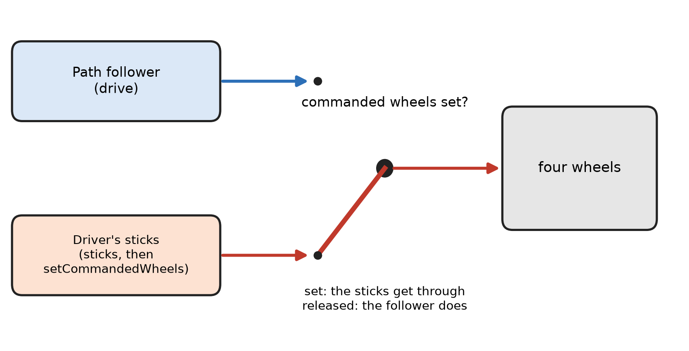

L6: let the path follower hold the drivetrain¶
What you will have when this is done¶
The robot drives on the sticks exactly as well as it did in L5, and the path follower is holding the drivetrain. The sticks still win while the driver is pushing them.
That matters because a follower holding the drivetrain can do things a lesson cannot. It knows where the robot is. It can hold a heading, and it can drive a path. None of that is possible while the follower is holding a stand-in, and all of it is what L8 onwards is about.
Before you start¶
L5 is finished, so the four mixing sums are written once and work.
L4 is finished, so
normalizedis written. This lesson calls it twice.About 2 m by 2 m of clear floor.
You write in three files. LessonsDriveTrain.java has three blanks, L6FollowerDriveTrain.java has
two, and L6WheelsFollowerOpMode.java has two.

Two arrows reaching the same four wheels, one from the path follower and one from the driver’s sticks, with the commanded-wheels switch between them showing which one gets through.¶
The steps¶
Step 1: let the follower ask for wheels¶
Up to L5 the drivetrain wrote the motors the moment the lesson asked. From here the follower calls
drive on it every update and hands it three numbers: forward, slide left, turn. The drivetrain has
to turn those into four powers.
Write mix in L6FollowerDriveTrain.java, TODO 2. It is the same four sums as L5, in a four-slot
array, named with FL, FR, BL and BR.
Then write drive in LessonsDriveTrain.java, TODO 6. It picks where the four powers come from and
sends them on. Step 2 is the other half of that choice, so for now the if takes the branch that
asks mix.
You’ll know it worked when this prints BUILD SUCCESSFUL:
./gradlew :TeamCode:testDebugUnitTest --tests '*L6FollowerDriveTrainTest.the*WheelIs*'
There is one test per wheel, so a sum that is wrong names its own wheel.
If it didn’t, open the report gradle names.
sliding left runs it forward expected:<1.0> but was:<-1.0>fromtheBackLeftWheelIs..., andsliding left runs it backwards expected:<-1.0> but was:<1.0>fromtheBackRightWheelIs.... The two back sums are swapped. The test names the wheel, and the message says which of the three numbers is going the wrong way into it.driving forward runs it forward expected:<1.0> but was:<0.0>from all four. Nothing reached the motors at all. Eithermixstill hands back the empty array it was given, ordrivestops before callingwriteWheels().NullPointerException: Cannot load from double array because "sourcePowers" is null. Theifindriveis the wrong way round.commandedWheels == nullis the case that asksmix.
Step 2: let the sticks win¶
The follower is not the only one who wants the wheels. The driver does too, and the driver wins. A lesson says so by commanding the four wheels, and a commanded wheel ignores whatever the follower worked out until the lesson hands it back.
Write setCommandedWheels, TODO 4, and releaseCommandedWheels, TODO 5, both in
LessonsDriveTrain.java. One remembers four powers, the other forgets them.
Then write sticks in L6FollowerDriveTrain.java, TODO 1. It goes through mix on purpose, so the
driver’s three numbers and the follower’s three numbers mean the same thing at every wheel.
You’ll know it worked when the whole class passes:
./gradlew :TeamCode:testDebugUnitTest --tests '*L6FollowerDriveTrainTest*'
If it didn’t:
the wheels are commanded, not left to the follower, with no numbers after it.sticksran and nothing got commanded. Eithersticksis still blank, orsetCommandedWheelsis.expected:<0.1> but was:<0.0>fromwriteWheelsSendsEachPowerToItsOwnMotor. That one commands four different numbers itself, sosticksis not the problem.setCommandedWheelsis not storing them.released, so the follower's zero reaches the motor expected:<0.0> but was:<0.1>, on its own.releaseCommandedWheelsis the blank that is left, and setting the field to null is the whole line.IllegalStateException: L6FollowerDriveTrain is driven by driveWheelsNow and by the follower at the same time.stickscalleddriveWheelsNow, which is L2b’s door and writes the motors straight away. The follower is holding this drivetrain now, so two things would be writing the same four motors. The check stops it, and the message says which door to use instead.
One mistake the tests here cannot see
Leaving normalized out of sticks passes all nine of them. CachedMotor chops any power over 1
back down to 1, and on the diagonal that gives the same four numbers normalized would have. It is
the lopsided asks that come out wrong. Watched, with full forward and half a turn: 1.000 and
0.333 with normalized, and 1.000 and 0.500 without. The right side runs faster than it
should, so the robot turns less than the driver asked. Step 4 is where you feel it.
Step 3: hand the drivetrain over¶
Two blanks in L6WheelsFollowerOpMode.java. TODO 1 changes the field to an L6FollowerDriveTrain,
and TODO 2 passes it to initAfter(drivetrain). L2 to L5 called initAfter() with nothing, because
they drove their own wheels.
No test watches this step. The harness gives every OpMode its own follower and ignores what is
passed to initAfter. Both blanks were left wrong on purpose, and the whole suite still passed.
You’ll know it worked when step 4 drives. That is the only check there is.
If it didn’t, and the robot does not move at all, this step is why. Commanding the wheels only
remembers four numbers. Something has to call drive to send them, and that something is the
follower. Watched: after sticks(1, 0, 0) and no follower update the front left motor holds 0.00,
and one update later it holds 1.00.
Step 4: drive it¶
Send the code to the robot. Run L6 Follower Wheels and press PLAY. Drive it the way you drove L5.
You’ll know it worked when it feels like L5. Forward, sideways, turn, and a diagonal, all the same as before.
If it didn’t, and nothing moves at all, go back to step 3.
If it didn’t, and it drives but turns lazily with the drive stick held all the way forward, that
is normalized missing from sticks. It is the same fault L4 measured on the floor, and no test
here catches it.
What you just did¶
drive asks one question every update: has a lesson commanded the wheels? If not, mix what the
follower asked for. If so, use what was commanded and throw the follower’s answer away. That is nine
lines, and every lesson from L8 on stands on them.
mix is also the method L5’s drivetrain refuses to write. Hand an L5HolonomicDriveTrain to the
follower and it stops at the first update and says why. This is the lesson where the missing method
arrives, so the refusal is over.
This door is ours, not Pedro’s. Pedro’s own mecanum drivetrain does what the follower says. Ours lets the driver reach past it, to the wheels. The teleop lessons after L8 all need that. The follower keeps doing its own job while they do.
Where next¶
task.l8 puts a second localizer beside the first one and logs both. It needs a follower that is holding a real drivetrain, which is what you just handed it.